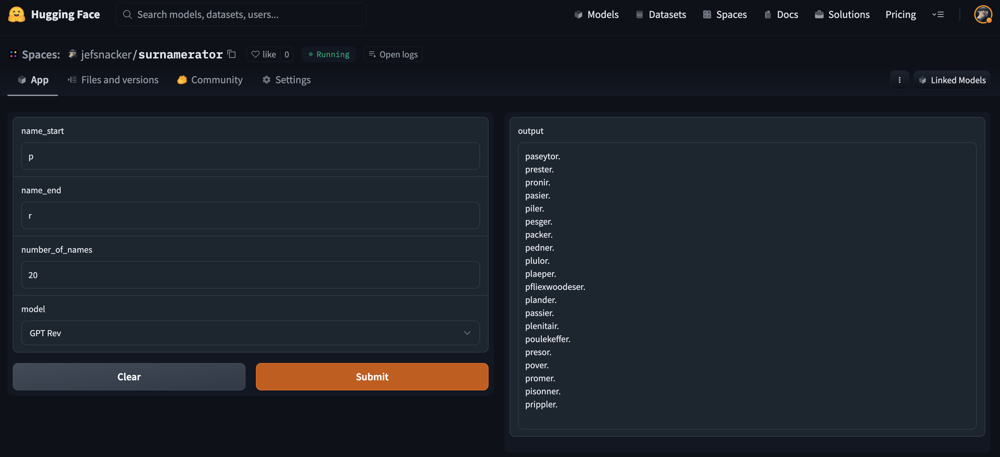
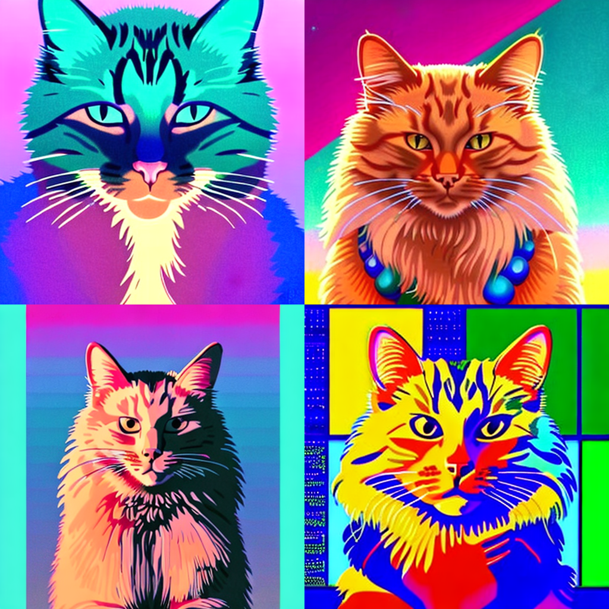
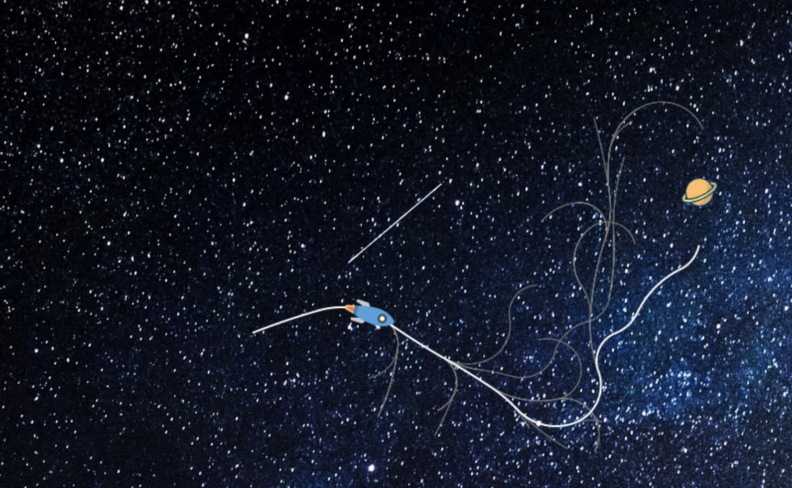
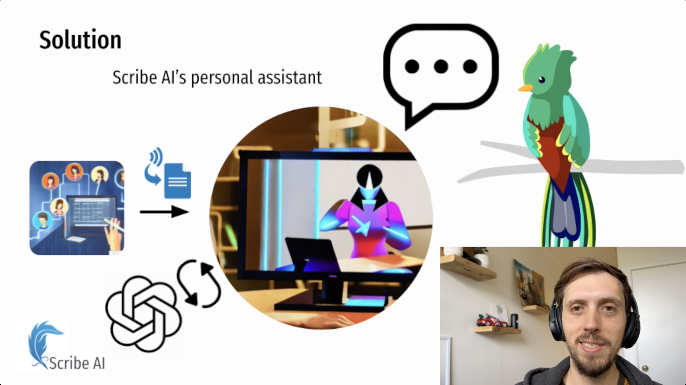

Beyond Behavior Cloning in Autonomous Driving: A Survey of Closed-Loop Training Techniques
Tech Report · 2025
Publications, patents, and open-source projects.
Tech Report · 2025

A last name generator powered by a small language model (SLM), inspired by my partner's desire for a new surname.
My partner wanted control over the first and final characters of generated names. First characters were easy: initialize the prompt with them. Final characters were harder. I modified the dataset to embed "hints" of the final characters before the regular model input, giving the transformer enough context to predict the ending correctly.
Coded a transformer from scratch — previously I'd only used them via libraries or read about them in papers.
Special thanks to Andrej Karpathy for inspiring this project with his Zero-to-Hero series.

Used DreamBooth to fine-tune a Stable Diffusion model on my cat Azriel and generate AI portraits. Can you tell which is the real photo?
Determining training hyperparameters took significant iteration. I wrote a Medium article outlining the configurations that worked.
Reinforced the importance of experiment tracking. Notating training images, steps, and learning rate produced more consistent results.
The HuggingFace diffusers class provided a great foundation. The Azriel model won 2nd place in their DreamBooth competition.

A JavaScript implementation of a Rapidly-Exploring Random Tree (RRT). The rocket uses the search tree to navigate space and intercept an orbiting planet.
Determining an effective search methodology was tricky. I created a node queue prioritized by Euclidean distance to the planet. The Euclidean metric causes problems where the closest node can point away from the planet, making that path more costly than others.
First time writing JavaScript for the web. Learned how it integrates with HTML.

For AssemblyAI's Winter Hackathon, I built Scribe — an automated meeting note-taking app that lets users focus on calls and quickly catch up on anything they missed.
The hackathon was only two days. Getting real-time data from web conferencing software was the main obstacle — Zoom, Meet, and others don't expose good APIs for this. I ended up using a plugin that read subtitles off a live Google Meet page. Getting raw audio would have made a much better product.
The AI-related parts were trivial. The hardest aspects were building the website and piping data around. Never underestimate boilerplate code.